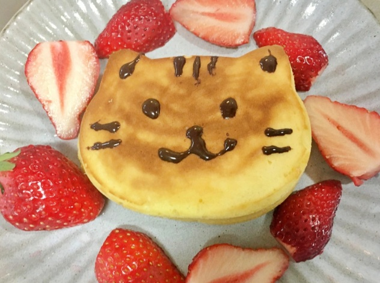
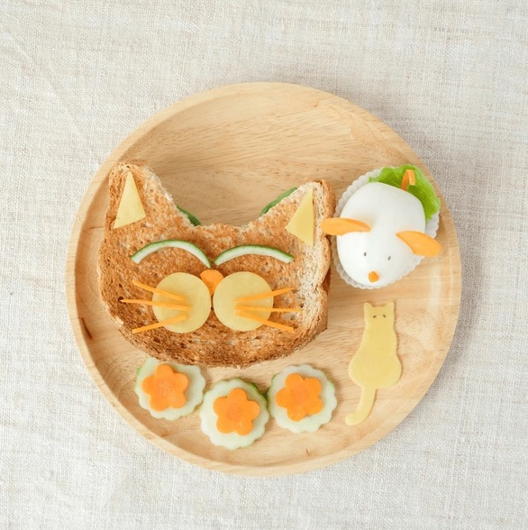
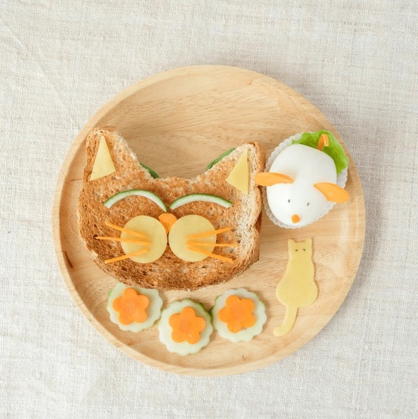
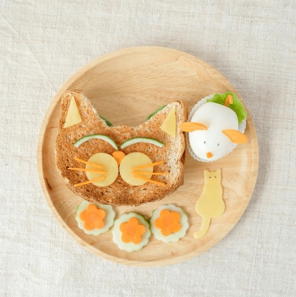
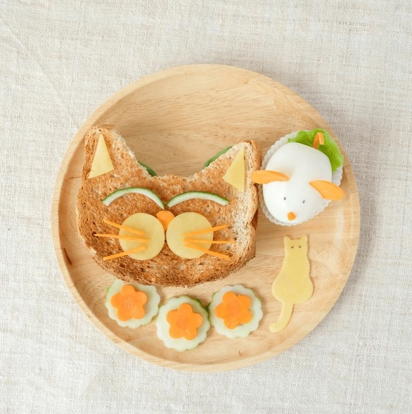

Nuestros Productos


 




Nuestro tradicional house blend, el hijo prodigio de la casa. Granos provenientes de Brasil, nos permiten obtener este cafe pleno, de cuerpo medio, sin acidez ni amargor. Si lo vas a tomar en tu casa, te vas a sentir bien cerca de TIENDA.
Una combinación única, lograda por la combinación de tres varietales: Brasil Santos Mogiana, Colombia Supremo y Moka. Un café de cuerpo medio, levemente acidulado y estructuralmente complejo.
Este blend nos regala un café de gran cuerpo, con un sabor especiado. Si sos amante del café intenso, te vas a enamorar de nuestro Minka.
Nuestro varietal clásico. Adentrate en las regiones colombianas con este café de cuerpo suave, gusto frutado, aroma floral y una delicada acidez. Inconfundible.
Si querés disfrutar un exquisito café, pero reducir tu dosis diaria de cafeína, este es tu blend! Café originario de Colombia, suave, de cuerpo medio y un aroma que te invita a probarlo. Recomendado para aquellas personas sensibles a la cafeína.
Un café de cuerpo suave, y baja acidez hacen de BRASIL el ideal para tus preparaciones de café filtrado.
SIEMPRE HAY UNA
Encontrá nuestra sucursal más cercana.
Ingresar